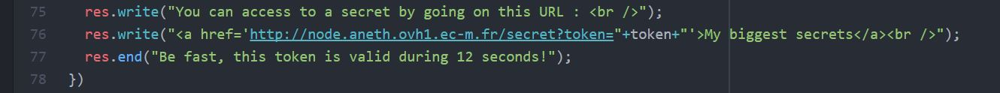
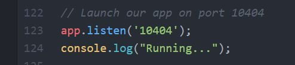
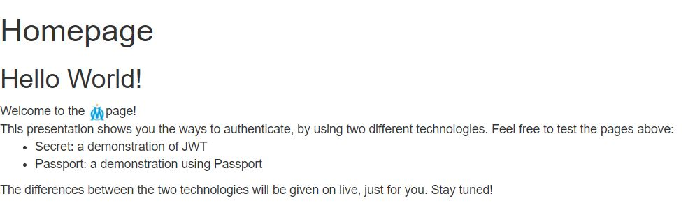
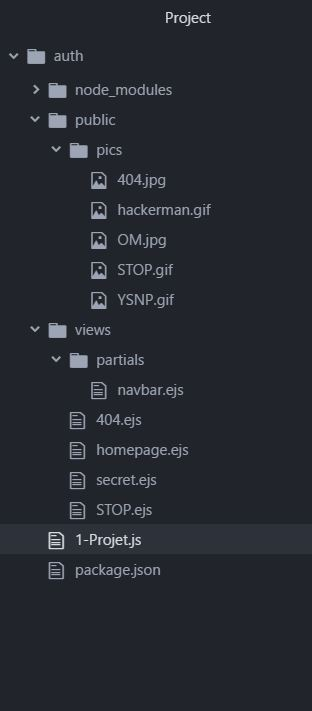
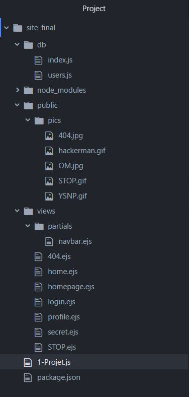
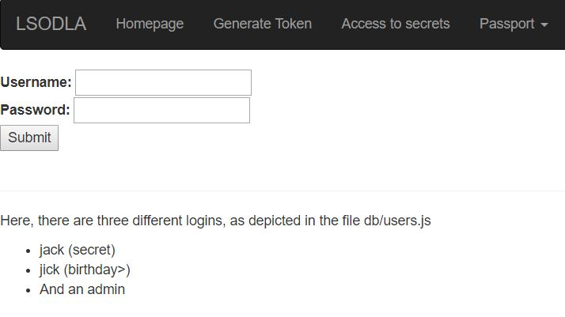
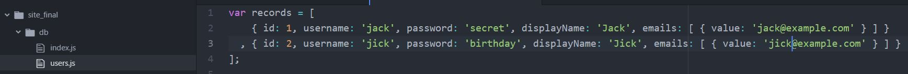
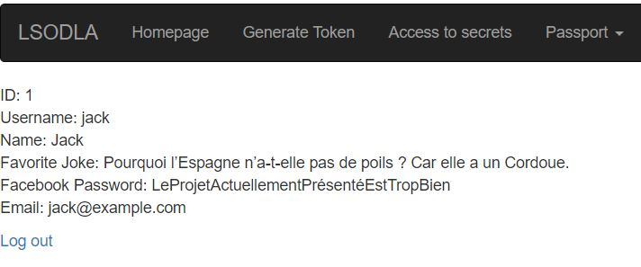

L’authentification sur un site Oueb¶
Explications préalables¶
Pourquoi faire ça?¶
Authentication à base de “jetons” (tokens) :
Pour sécuriser un site, il est souvent nécessaire d’attribuer l’accès à certaines pages seulement si l’utilisateur est authentifié. L’authentification peut se faire via des tokens. Un token est un morceau de donnée qui n’a pas de signification propre, mais qui peut s’avérer utile pour la sécurisation du site, s’il est correctement utilisé, i.e. avec le système ad hoc. À chaque requête, le token est vérifié et seulement alors la réponse du server est transmise. Le token a une durée limitée dans le temps. À l’expiration, un nouveau token est transmis et utilisable.
Le token est un substitut à l’utilisation de cookies et apporte divers avantages.
- Le token est contenu par le client et contient toutes les informations nécessaires à l’authentification. Cela permet de libérer le serveur de connaitre toutes les sessions en cours.
- Le token peut être généré de n’importe où, puisque la génération du token est distincte de sa vérification.
- Le token permet de gérer les types d’utilisateurs et les permissions sur les ressources accessibles par l’utilisateur.
Authentication grâce à un formulaire :
C’est la méthode la plus connue pour s’authentifier sur un site web. Il suffit d’inscrire son identifiant et son mot de passe. Ceux-ci seront comparés à ceux d’une base de données afin de délivrer un droit d’accès à certains contenus. Les informations ne transitent pas par la barre d’adresse URL.
C’est quoi JWT?¶
JSON Web Token (JWT) est un système d’authentification à base de tokens. Les tokens sont suffisamment concis pour pouvoir être transmis via une requête POST. Le JSON Web Token est constitué de 3 parties : un Header, un Payload et une Signature. Les deux premières parties sont encodées en Base64. Le tout est signé. Le token est hashé par une méthode donnée dans le header. Le payload contient la donnée du token à proprement dite. Le token est signé, mais pas crypté. Ce qui signifie qu’une personne ayant accès au token serait en mesure d’en regarder le contenu du header et du payload. Mais sans la clé secrète utilisée pour façonner le token, celui-ci est inutilisable et l’accès aux ressources sera refusé pour cause de Signature Invalide. Si le server ne peut pas vérifier le token, celui-ci va renvoyer une erreur 401 : Unauthorized.
Note
- Conserver sa clé privée … privée !
- Ne pas mettre de données sensibles dans son token (parce que non crypté )
- Donner une durée à ses tokens. Cela permet de palier à certains problèmes qui pourraient arriver, comme par exemple un changement de clé privée.
- Utiliser le protocole HTTPS. Sinon, votre token pourra être compromis.
C’est quoi Passport?¶
Passport est un système mettant en place un formulaire d’authentification. Il permet également de gérer les sessions. Il utilise une Base de Données Redis. On s’identifie par son identifiant et son mot de passe. Il permet aussi de s’authentifier par Facebook, Twitter, Google etc…
Attention toutefois aux formulaires d’authentification. Si le site n’est pas sécurisé, la base de données peut être écrite en claire ! Cela signifie que le serveur va comparer l’identifiant et le mot de passe qu’a envoyé l’utilisateur avec celui de sa base de données…
Note
Imaginez deux secondes …
- Le site est en HTTP et utilise le protocole TCP.
- Un étranger pourrait espionner le réseau et voir le mot de passe que vous venez d’envoyer.
- Un étranger s’est introduit dans le serveur et a alors accès à tous les mots de passe des utilisateurs!
Pour pallier à cela, il faut utiliser une fonction de hashage. Le serveur ne doit conserver que les hashes des mots de passe. Lorsque l’utilisateur entre son mot de passe, le hash de ce mot de passe doit alors être calculé et c’est celui-ci qui doit être envoyé au serveur et comparé avec le hash de la BDD.
TP¶
Installation préalable (à partir de rien)¶
- Logiciels nécessaires
Presentation pour une utilisation en local.
Pour pouvoir lancer tout cela, il va falloir commencer par installer node. Ensuite, il faut installer le package Express. Enfin, pour faire tourner JWT, il faut installer le package jsonwebtoken. Il faut également installer le package Passport.
- Comment faire? (Dépendances, …)
Lorsque tout est installé, vous avez node, prêt à être utilisé. Alors, placez-vous dans un dossier (ici, nous utiliserons le dossier ./node) et nous allons créer une nouvelle application.
npm init
Là, nous pouvons compléter les informations relatives à notre projet:
Watson@Lenovo-PC:~/node$ npm init
name: (node) 1-Projet
version: (0.0.0)
description: A project for testing, for the fun
entry point: (index.js) 1-Projet.js
test command:
git repository:
keywords:
author:
license: (BSD-2-Clause) WTFPL
About to write to ./node/package.json:
{
...
}
Is this ok? (yes)
Là, le fichier package.json est créé. On peut alors rajouter les dépendances nécessaires. Si vous avez copié l’ensemble des documents, vous avez le fichier package.json. Il permet de récupérer les dépendances.
npm install
Nous avons préparé le terrain pour le programme. Il faut à présent le créer : les codes sources sont dans le fichier compressé (Pour le programme 1-Projet.js, un exemple se trouve en annexe).
Code-source:
Par exemple, sur un serveur distant, il est possible d’utiliser nano:
nano 1-Projet.js
Puis coller le code dans 1-Projet.js. Le projet est prêt à être lancé!
Warning
Il faut modifier quelques élements en fonction de votre site!
Remplacez l’adresse du site par l’adresse de votre site.
Ensuite, remplacez le port par votre port par défaut.
- Exécution du service
Pour faire nos tests en local, nous pouvons lancer dans une console :
node 1-Projet.js
Maintenant, dans un navigateur, saisissons pour un usage local:
localhost:10404
Résultat :
Nous pouvons maintenant tester en local notre application.
Pour un usage en production, il suffit de faire la même chose sur le serveur OVH: Nous relançons les commandes de la partie de présentation sur le Terminal (les fichiers seront créés dans le dossier ~/node). Puis, lorsque l’application est lancée, l’accès se fera à l’adresse: http://node.aneth.ovh1.ec-m.fr
Note
Entrez l’adresse du site en fonction du votre !
Utilisation¶
- Script 1 : génération et utilisation d’un token (JSON Web Token)
Code-source:
Au terme de cette partie sur JWT, nous obtenons l’architecture suivante (avec les fichiers contenant les images) :
Pour utiliser ce script, il faut l’avoir lancé.
node 1-Projet.js
Ensuite, rendez-vous sur le site /secret
Tip
http://node.aneth.ovh1.ec-m.fr/secret
Vous observez alors que vous n’avez pas accès à la page ! Il vous faut un token ! Rendez-vous sur le site /getToken
Tip
http://node.aneth.ovh1.ec-m.fr/getToken
Là, vous pouvez copier votre token.
Rendez-vous ensuite sur votre site /secret?token= votre token en cliquant sur My biggest secrets
Tip
http://node.aneth.ovh1.ec-m.fr /secret?token=eyJhbGciOiJIUzI1NiIsInR5cCI6IkpXVCJ9 .eyJ1c2VybmFtZSI6ImFkbyIsImlhdCI6MTUxOTIwODI5NCwiZXhwIjoxNTE5MjA4NDE0fQ .GPrh6Cu9HUY6wA4N8ntfU7S6I9EvFzWL_wxU0n8eFaE
- Script 2 : Connexion via un formulaire avec Passport
Une fois les fichiers copiés, vous obtenez finalement l’architecture ci-contre :
Pour utiliser ce script, il faut l’avoir lancé.
node 1-Projet.js
Rendez-vous sur l’onglet Passport -> Passport : Login
Rentrez un nom d’utilisateur et un mot de passe aléatoires. Vous retombez sur la page des logins, parce que le compte n’existe pas. Si vous essayez d’aller sur My-profile, vous retombez sur la page des logins.
Maintenant regardons les comptes dans la Base de Données :
Maintenant, essayez de vous connecter avec le compte de Jack (jack | secret ). Vous arrivez sur la Homepage, vous êtes connecté ! Dirigez-vous vers My-profile , vous avez accès à son compte !
Note
Félicitations ! Vous venez de terminer ce tuto avec brio (ou tout seul) !